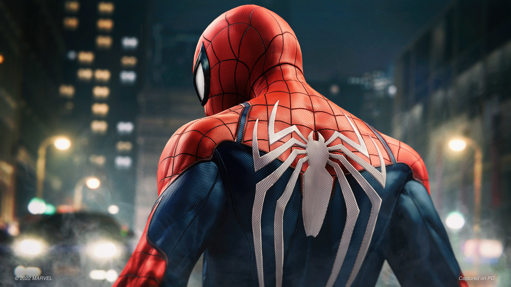
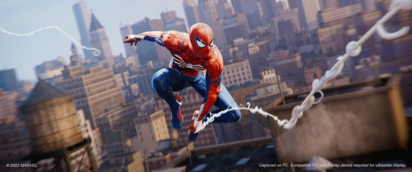

O Homem-Aranha é um herói ágil e corajoso que protege Nova York com seus sentidos aguçados, teias e um forte senso de responsabilidade.

O Homem-Aranha (Spider-Man) é um super-herói fictício da Marvel Comics, criado por Stan Lee e Steve Ditko em 1962. Seu alter ego é Peter Parker, um jovem órfão que ganha poderes após ser picado por uma aranha radioativa. Entre suas habilidades estão força sobre-humana, agilidade, sentido-aranha (que o alerta para perigos) e a capacidade de escalar paredes. Ele também cria lançadores de teia para se locomover pela cidade. O personagem é conhecido por sua luta constante entre a vida pessoal e o dever de ser herói, resumida em sua famosa frase: "Com grandes poderes vêm grandes responsabilidades."
"Ser herói é isso... arriscar tudo por alguém que você nem conhece."
Peter Parker
“Marvel’s Spider-Man Remastered é um dos jogos mais divertidos e emocionantes já criados.”
Legião dos Heróis

Quiser saber mais e comprar: Clique aqui